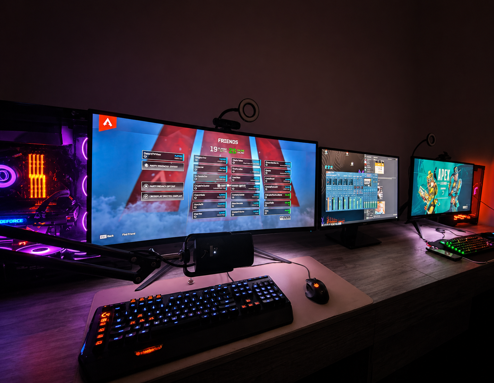
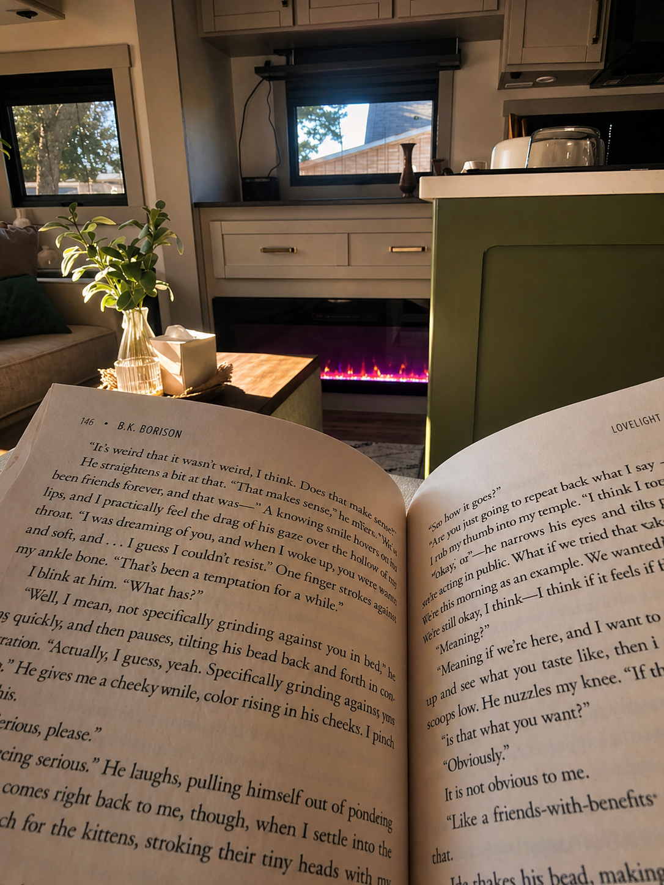
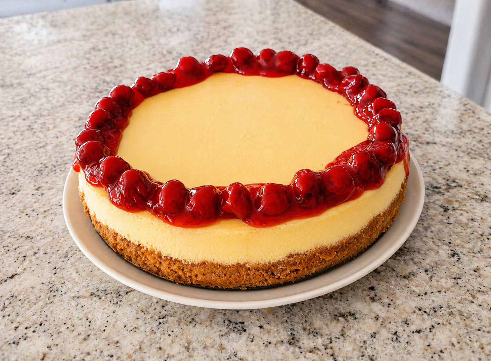

Playing games
Samantha enjoys PC gaming across competitive titles, open-world adventures, and co-op games she can share with family and friends. Gaming helps her stay connected, unwind, and keep her mind engaged in a positive way.
Samantha's hobbies reflect how she recharges, keeps learning, and creates meaningful time with family.

Samantha enjoys PC gaming across competitive titles, open-world adventures, and co-op games she can share with family and friends. Gaming helps her stay connected, unwind, and keep her mind engaged in a positive way.

Reading gives Samantha quiet time to reflect, keep learning, and explore ideas tied to psychology and personal growth, while also supporting her graduate studies and her long-term goal of opening her own practice.

Baking is one of Samantha's creative outlets, and she enjoys making recipes for family evenings and special celebrations, reflecting her care for others and the home-centered life she is intentionally building.
Traveling in the camper helps Samantha and her family explore new places, experiences, and routines together, and it aligns with her goal to see more of the country and world before building a homestead.